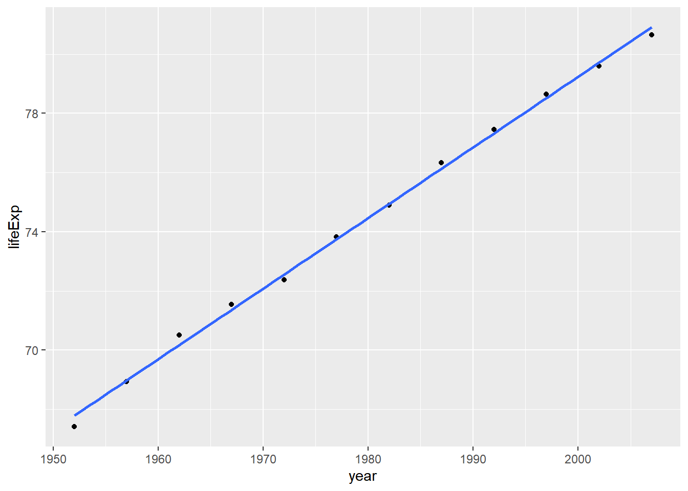
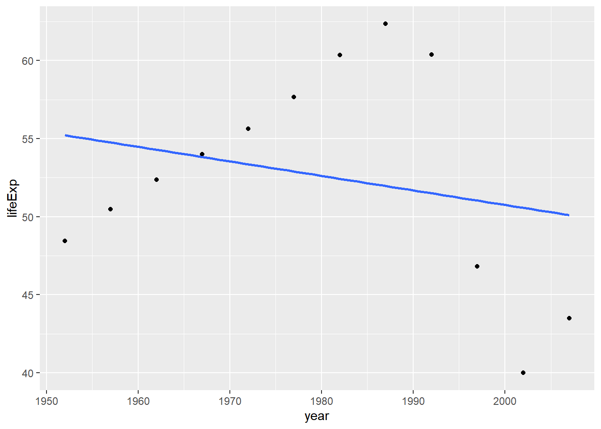

55 Function-writing practicum
55.1 Overview
We recently learned how to write our own R functions (part 1, part 2, part 3).
Now we use that knowledge to write another useful function, within the context of the Gapminder data:
- Input: a data.frame that contains (at least) a life expectancy variable
lifeExpand a variable for yearyear - Output: a vector of estimated intercept and slope, from a linear regression of
lifeExponyear
The ultimate goal is to apply this function to the Gapminder data for a specific country. We will eventually scale up to all countries using external machinery, e.g., the dplyr::group_by() + dplyr::do().
55.2 Load the Gapminder data
As usual, load gapminder. Load ggplot2 because we’ll make some plots and load dplyr too.
library(gapminder)
library(ggplot2)
library(dplyr)55.3 Get data to practice with
I extract the data for one country in order to develop some working code interactively.
j_country <- "France" # pick, but do not hard wire, an example
(j_dat <- gapminder %>%
filter(country == j_country))
#> # A tibble: 12 x 6
#> country continent year lifeExp pop gdpPercap
#> <fct> <fct> <int> <dbl> <int> <dbl>
#> 1 France Europe 1952 67.4 42459667 7030.
#> 2 France Europe 1957 68.9 44310863 8663.
#> 3 France Europe 1962 70.5 47124000 10560.
#> 4 France Europe 1967 71.6 49569000 13000.
#> 5 France Europe 1972 72.4 51732000 16107.
#> 6 France Europe 1977 73.8 53165019 18293.
#> 7 France Europe 1982 74.9 54433565 20294.
#> 8 France Europe 1987 76.3 55630100 22066.
#> 9 France Europe 1992 77.5 57374179 24704.
#> 10 France Europe 1997 78.6 58623428 25890.
#> 11 France Europe 2002 79.6 59925035 28926.
#> 12 France Europe 2007 80.7 61083916 30470.Always always always plot the data. Yes, even now.
p <- ggplot(j_dat, aes(x = year, y = lifeExp))
p + geom_point() + geom_smooth(method = "lm", se = FALSE)
#> `geom_smooth()` using formula 'y ~ x'
55.4 Get some code that works
Fit the regression:
j_fit <- lm(lifeExp ~ year, j_dat)
coef(j_fit)
#> (Intercept) year
#> -397.765 0.239Whoa, check out that crazy intercept! Apparently the life expectancy in France around year 0 A.D. was minus 400 years! Never forget to sanity check a model. In this case, a reparametrization is in order. I think it makes more sense for the intercept to correspond to life expectancy in 1952, the earliest date in our dataset. Estimate the intercept eye-ball-o-metrically from the plot and confirm that we’ve got something sane and interpretable now.
j_fit <- lm(lifeExp ~ I(year - 1952), j_dat)
coef(j_fit)
#> (Intercept) I(year - 1952)
#> 67.790 0.23955.5 Turn working code into a function
Create the basic definition of a function and drop your working code inside. Add arguments and edit the inner code to match. Apply it to the practice data. Do you get the same result as before?
le_lin_fit <- function(dat, offset = 1952) {
the_fit <- lm(lifeExp ~ I(year - offset), dat)
coef(the_fit)
}
le_lin_fit(j_dat)
#> (Intercept) I(year - offset)
#> 67.790 0.239I had to decide how to handle the offset. Given that I will scale this up to many countries, which, in theory, might have data for different dates, I chose to set a default of 1952. Strategies that compute the offset from data, either the main Gapminder dataset or the excerpt passed to this function, are also reasonable to consider.
I loathe the names on this return value. This is not my first rodeo and I know that, downstream, these will contaminate variable names and factor levels and show up in public places like plots and tables. Fix names early!
le_lin_fit <- function(dat, offset = 1952) {
the_fit <- lm(lifeExp ~ I(year - offset), dat)
setNames(coef(the_fit), c("intercept", "slope"))
}
le_lin_fit(j_dat)
#> intercept slope
#> 67.790 0.239Much better!
55.6 Test on other data and in a clean workspace
It’s always good to rotate through examples during development. The most common error this will help you catch is when you accidentally hard-wire your example into your function. If you’re paying attention to your informal tests, you will find it creepy that your function returns exactly the same results regardless which input data you give it. This actually happened to me while I was writing this document, I kid you not! I had left j_fit inside the call to coef(), instead of switching it to the_fit. How did I catch that error? I saw the fitted line below, which clearly did not have an intercept in the late 60s and a positive slope, as my first example did. Figures are a mighty weapon in the fight against nonsense. I don’t trust analyses that have few/no figures.
j_country <- "Zimbabwe"
(j_dat <- gapminder %>% filter(country == j_country))
#> # A tibble: 12 x 6
#> country continent year lifeExp pop gdpPercap
#> <fct> <fct> <int> <dbl> <int> <dbl>
#> 1 Zimbabwe Africa 1952 48.5 3080907 407.
#> 2 Zimbabwe Africa 1957 50.5 3646340 519.
#> 3 Zimbabwe Africa 1962 52.4 4277736 527.
#> 4 Zimbabwe Africa 1967 54.0 4995432 570.
#> 5 Zimbabwe Africa 1972 55.6 5861135 799.
#> 6 Zimbabwe Africa 1977 57.7 6642107 686.
#> 7 Zimbabwe Africa 1982 60.4 7636524 789.
#> 8 Zimbabwe Africa 1987 62.4 9216418 706.
#> 9 Zimbabwe Africa 1992 60.4 10704340 693.
#> 10 Zimbabwe Africa 1997 46.8 11404948 792.
#> 11 Zimbabwe Africa 2002 40.0 11926563 672.
#> 12 Zimbabwe Africa 2007 43.5 12311143 470.
p <- ggplot(j_dat, aes(x = year, y = lifeExp))
p + geom_point() + geom_smooth(method = "lm", se = FALSE)
#> `geom_smooth()` using formula 'y ~ x'
le_lin_fit(j_dat)
#> intercept slope
#> 55.221 -0.093The linear fit is comically bad, but yes I believe the visual line and the regression results match up.
It’s also a good idea to clean out the workspace, rerun the minimum amount of code, and retest your function. This will help you catch another common mistake: accidentally relying on objects that were lying around in the workspace during development but that are not actually defined in your function nor passed as formal arguments.
rm(list = ls())
le_lin_fit <- function(dat, offset = 1952) {
the_fit <- lm(lifeExp ~ I(year - offset), dat)
setNames(coef(the_fit), c("intercept", "slope"))
}
le_lin_fit(gapminder %>% filter(country == "Zimbabwe"))
#> intercept slope
#> 55.221 -0.09355.7 Are we there yet?
Yes.
Given how I plan to use this function, I don’t feel the need to put it under formal unit tests or put in argument validity checks.
55.8 Resources
Packages for runtime assertions (the last 3 seem to be under more active development than assertthat):
assertr on CRAN and GitHub - explicitly data pipeline oriented
assertive on CRAN and Bitbucket - rich set of built-in functions
Hadley Wickham’s book Advanced R (2015):
- Section on defensive programming
- Section on function arguments
- Section on return values
Unit testing with testthat
Wickham and Bryan’s R Packages book (in progress)
Wickham’s testthat: Get Started with Testing article in The R Journal (2011a). Maybe this is completely superseded by the newer chapter above? Be aware that parts could be out of date, but I recall it was a helpful read.